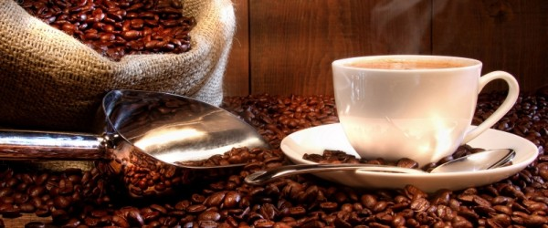
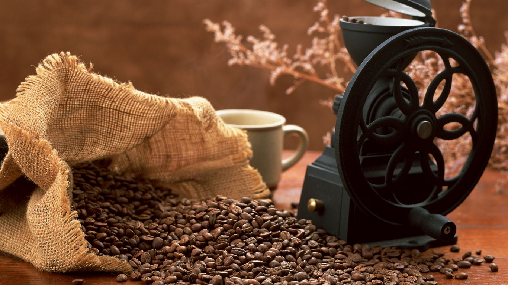

CafNet Club es la idea de Julián Marcilla Ferri, fundador de la conocida marca de cafés Marcilla. Como buen amante del café siempre quiso hacer el Mejor Rincón de Café del Mundo. Pero el amor por estos tostados granos empezó cuando debía de tener unos catorce años, hacia 1912, llegó de Alzira a Barcelona con su padre y un carro con el que repartía leña o carbón. Marcilla empezó a tostar café: "Café rico", decía, y lo vendía en paquetes de 25 gramos, a los que bautizó con la marca Cafés a la Crema Marcilla.

El negocio creció, tropezó con la guerra y lo volvió a levantar. Pero fueron sus dos hijos, Félix y Enrique Marcilla Pagés, quienes le dieron un nuevo impulso: en los años sesenta compraron maquinaria en Alemania y modernizaron la fábrica del barrio de Sant Andreu, hasta que por cuestiones logísticas en 1979 se trasladaron a Mollet.

Hacia 1980 se liberalizó el mercado del café y llegaron las multinacionales. "Marcilla fue la primera empresa española que comercializó café molido al vacío. Mi padre vio claro que teníamos que ser grandes”, explica Julián Marcilla Aurell, de la tercera generación de la familia cafetera. Llegó la holandesa Douwe Egbers, y "compró primero el 40% y en 1985 se quedó la compañía". Aunque el café no es un producto de primera necesidad, sí que es necesario como producto. Solo el petróleo mueve más dinero que este negocio, por algo será.
Ahora 30 años después, los hijos de Julián Marcilla realizan la ilusión de su padre centralizando en un mismo lugar las mejores marcas de café del Mundo. Gracias a la globalización que ha creado internet este sueño es posible para los amantes del café. Bienvenidos al sueño de Julián Marcilla.